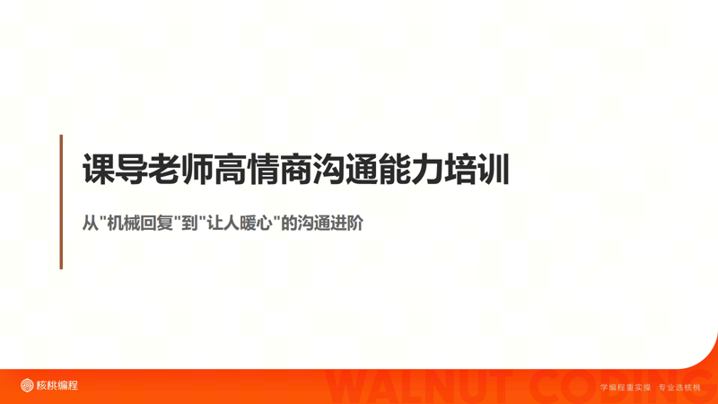
大家好，这节课是课导老师高情商沟通能力培训这节课不是教大家说漂亮话，也不是教大家怎么讨好家长。咱们要解决的是特别实在的问题：每天给家长发消息、回消息，怎么把每一条都说到点子上，让家长觉得你专业，也觉得你暖心，愿意一直跟你聊下去。咱们面对的家长，孩子已经在核桃学完了第一阶段，跟老师打了半年交道，哪条消息是走流程、哪条是真上心，他们一眼就看得出来。这节课分两部分，前半部分用几个案例，看看沟通为什么这么关键；后半部分给大家一个四步公式，再拆几个高频场景，学完就能直接用到带班里。
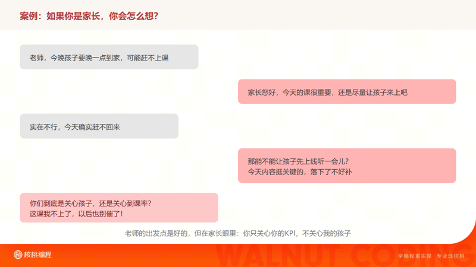
先看第一个案例。大家先别急着评判对错，把自己代入家长的位置，看到下面这几条消息，心里是什么滋味。家长说：“老师，今晚孩子要晚一点到家，可能赶不上课。”老师回：“家长您好，今天的课很重要，还是尽量让孩子来上吧。”家长又说：“实在不行，今天确实赶不回来。”老师接着劝：“那能不能让孩子先上线听一会儿？今天内容挺关键的，落下了不好补。”到这儿，家长直接爆发了：“你们到底是关心孩子，还是关心到课率？这课我不上了，以后也别催了！”大家品一品，这位老师出发点坏吗？不坏，老师觉得自己是在负责任，是为孩子好。可家长接收到的是什么？是你根本不在乎我家孩子今天累不累、方不方便，你只关心你的KPI，不关心我的孩子。问题出在哪？家长已经说了赶不回来，老师还在一遍一遍地劝，一直站在自己的角度要结果。本来好好商量就能解决的事，就因为话说得不对，把家长推远了。这种情况带班时很常见，大家先记住这个感觉，下一页咱们看正确的做法。
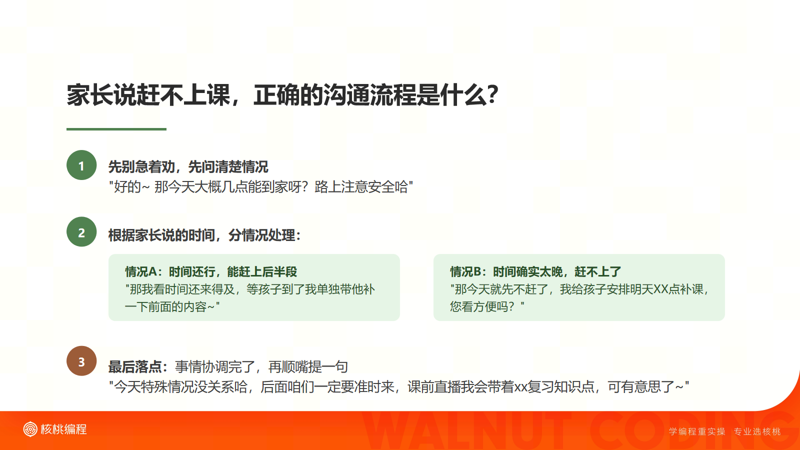
那家长说赶不上课，正确的流程应该怎么走？其实就三步。第一步，先别急着劝，先把情况问清楚。你可以说：“好的，那今天大概几点能到家呀？路上注意安全哈。”先搞明白时间，再谈别的。这一步最容易被跳过，很多老师一听赶不上，第一反应就是劝来上课，结果就成了上一页那样。第二步，根据家长说的时间，分情况处理。情况一，时间还行，能赶上后半段，你就说：“那我看时间还来得及，等孩子到了我单独带他补一下前面的内容。”情况二，时间确实太晚，赶不上了，那就主动安排补课：“那今天就先不赶了，我给孩子安排明天XX点补课，您看方便吗？”注意这句的结尾是问家长方不方便，把选择权交给家长。第三步，也是最后的落点。事情都协调完了，家长也满意了，你再顺嘴提一句：“今天特殊情况没关系哈，后面咱们一定要准时来，课前直播我会带着XX复习知识点，可有意思了。”这时候再提准时，家长听着就是提醒，不是催。核心就一句话：先解决问题，再提要求。
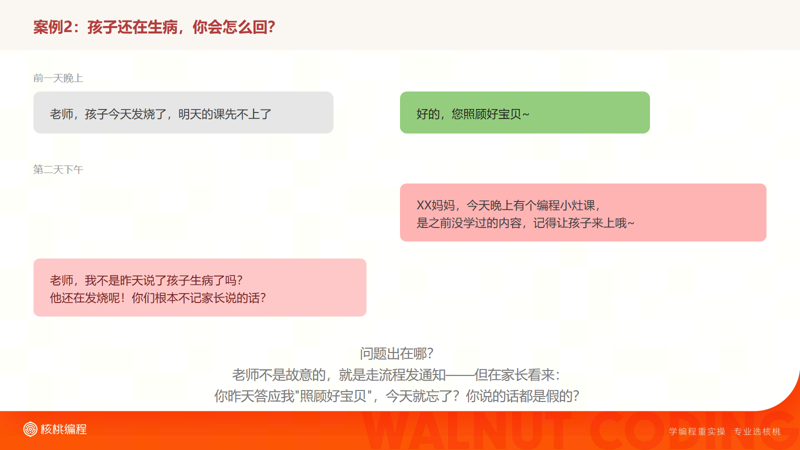
再看第二个案例，这个特别容易踩坑。前一天晚上，家长发消息：“老师，孩子今天发烧了，明天的课先不上了。”老师回了一句：“好的，您照顾好宝贝。”到第二天下午，老师又照常发来一条：“XX妈妈，今天晚上有个编程小灶课，是之前没学过的内容，记得让孩子来上哦。”家长一下子就火了：“老师，我不是昨天说了孩子生病了吗？他还在发烧呢！你们根本不记家长说的话？”问题出在哪？说句公道话，老师真不是故意的，多半是带班多、消息杂，忘了这个孩子请过假，走流程把通知发出去了。但在家长看来，你昨天答应我照顾好宝贝，今天就忘了？你说的话都是假的？我家孩子在你这儿就是个到课数据，不是一个具体的人。这种失望比当面吵架还可怕。家长不会跟你吵，只会默默记在心里，到续课的时候就不找你了。那如果换你来回复这位家长，从前一天晚上那条开始，你有把握做得更好吗？大家先凭直觉选一下。
互动题（调查，无对错）
如果是你来回复这个家长，你会做得更好吗？
- A. 一般吧
- B. 我可以的
- C. 有点悬
选错后：直接继续
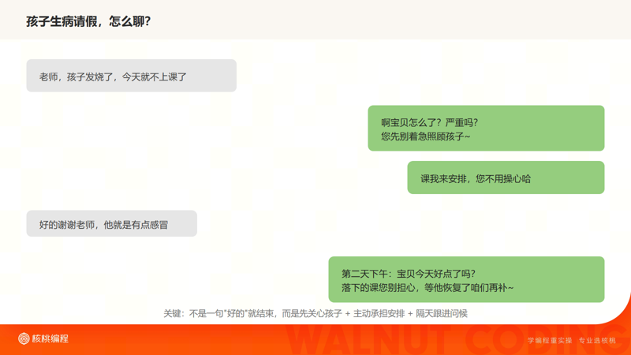
那孩子生病请假，到底该怎么聊？大家看这组完整的聊天记录。家长说：“老师，孩子发烧了，今天就不上课了。”老师没有只回一句好的，而是先问：“啊，宝贝怎么了？严重吗？您先别着急，照顾好孩子。”紧接着又发一条：“课我来安排，您不用操心哈。”家长这才放松下来：“好的谢谢老师，他就是有点感冒。”最关键的是第二天下午，老师又主动来了一句：“宝贝今天好点了吗？落下的课您别担心，等他恢复了咱们再补。”大家注意三个动作：先关心孩子，主动把安排扛过来，隔天再跟进问候。尤其是第二天那句跟进，正是让家长从客户变成朋友的关键。还有个细节，老师是分几条消息发的，不是一次砸过去一大段。这样看着就像真人在一句一句打字，不像群发模板。
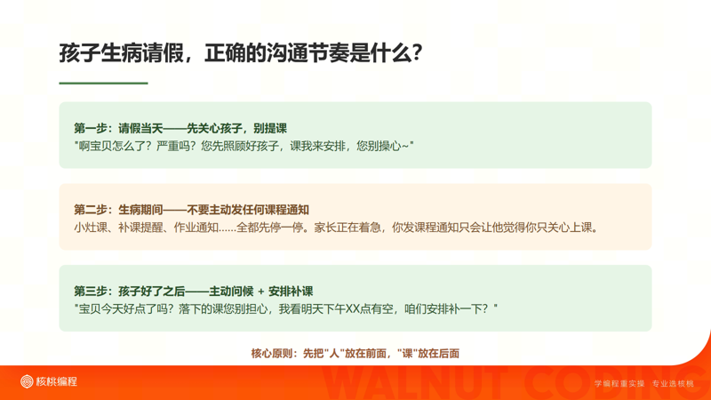
把刚才这个案例拆开，生病请假的沟通节奏一共三步。第一步，请假当天，先关心孩子，别提课。话术就是：“啊，宝贝怎么了？严重吗？您先照顾好孩子，课我来安排，您别操心。”第二步，生病期间，不要主动发任何课程通知，小灶课、补课提醒、作业通知，全部先停一停。家长正为孩子的病着急，这时候收到课程通知，只会觉得你只关心上课。上一页那个案例，就是在这一步出的问题。所以孩子一请病假，大家最好自己记一笔，提醒自己这几天别给这个家长发通知。第三步，孩子好了之后，主动问候，再安排补课：“宝贝今天好点了吗？落下的课您别担心，我看明天下午XX点有空，咱们安排补一下？”核心原则就一句话：先把人放在前面，课放在后面。人先顾好了，课的事再说。
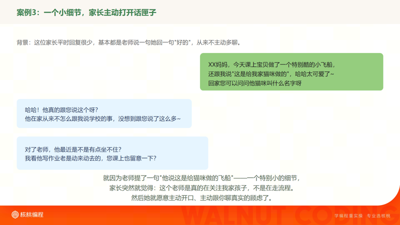
看完两个反面案例，咱们看一个正面的，这个特别暖。背景是这样：这位家长平时回复特别少，基本是老师说一句，她回一句好的，从来不主动多聊，你根本摸不透她在想什么。这次老师发了一条不一样的消息：“XX妈妈，今天课上宝贝做了一个特别酷的小飞船，还跟我说，这是给他家猫咪做的，哈哈太可爱了！回家您可以问问他猫咪叫什么名字呀。”家长一下子就接话了：“哈哈！他真的跟您说这个呀？他在家从来不怎么跟我说学校的事，没想到跟您说了这么多。”聊着聊着，她又主动说：“对了老师，他最近是不是有点坐不住？我看他写作业老是动来动去的，您课上也留意一下？”大家看，就因为老师提了一句给猫咪做的飞船，一个特别小的细节，家长立刻觉得：这个老师是真的在关注我家孩子，不是在走流程。然后才愿意主动开口，把真实的顾虑说出来。家长愿意说真实顾虑，咱们才有机会帮上忙，关系也就是这样一点点近起来的。很多时候不是家长不愿意理你，是你之前发的全是通知，没让家长感觉到你看见了这个孩子。
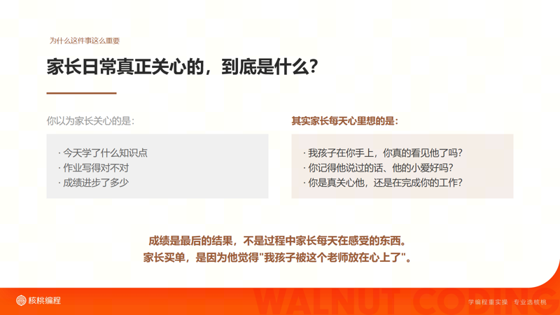
看完这三个案例，咱们回头想一个问题：家长日常真正关心的，到底是什么？很多老师以为，家长最关心的是今天学了什么知识点、作业写得对不对、成绩进步了多少。这些当然重要，但它们是结果，是最后才拿出来看的东西，不是家长每天在感受的东西。家长平时跟你聊天，心里真正在琢磨的是这几件事：我把孩子交到你手上，你真的看见他了吗？你记不记得他说过的话、他的小爱好？你是真关心他，还是在完成你的工作？回头看，被催到课的家长、被小灶课通知气到的家长，生气的根子都不在课本身，而是觉得你根本不在乎我家孩子。而那位被提到猫咪飞船的家长，一下子就打开了话匣子，因为感觉到被重视了。所以家长最后愿意买单、愿意续课，是因为觉得我的孩子被这个老师放在心上了。补一个小技巧：咱们带班多，不可能每个孩子都记得特别细。实在想不起具体表现，可以先说上节课咱们一起做的那个小项目，这是孩子确实做过的，说出来不假，家长听着也像在聊自家孩子。但这只是兜底，平时还是要多留意，尽量往具体细节上靠。
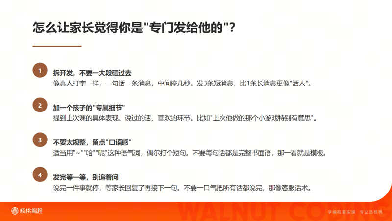
那怎么让家长觉得，这条消息是你专门发给他的，不是群发？四个小技巧，都很好上手。第一，拆开发，不要一大段砸过去。像真人打字一样，一句话一条消息，中间停几秒。发三条短消息，比一条长消息更像活人。第二，加一个孩子的专属细节。提一句上次课的具体表现、说过的话、喜欢的环节，比如上次他做的那个小游戏特别有意思。家长一看就知道你不是群发。第三，不要太规整，留点口语感。适当用用波浪号，还有哈、呢这样的语气词，偶尔打个短句。每句话都是完整的书面语，一看就是模板。第四，发完等一等，别追着问。说完一件事就停，等家长回复了再接下一句。一口气把所有话都说完，就像客服话术了。
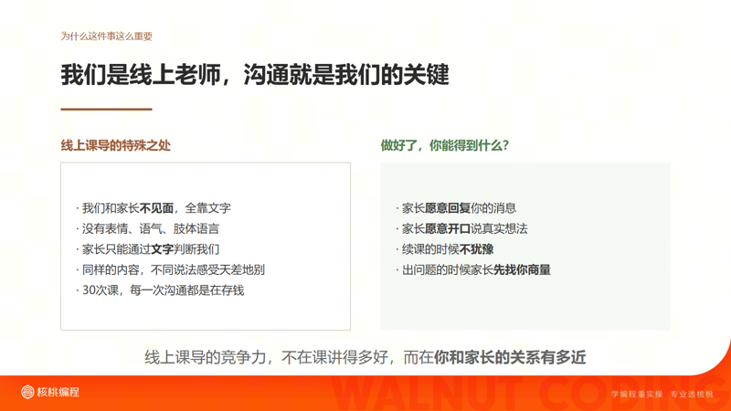
技巧讲完了，我想跟大家说清楚一件事：咱们为什么要花这么多时间练沟通？因为咱们是线上老师，跟家长不见面，全靠文字。线下老师跟家长面对面，一个微笑、一个点头，家长就放心了。咱们没有表情、没有语气、没有肢体语言，家长只能通过文字来判断咱们这个人。你发的每一条消息，就是家长眼里的你。同样一句话，换个说法，家长的感受就天差地别：你回得敷衍，家长觉得你不在乎；你回得用心，家长觉得你靠谱。而且一个孩子要跟咱们上30次课。这30次课里，你和家长的每一次沟通，都是在往信任账户里存钱。存够了，续课就是水到渠成的事。做好了能得到什么？家长愿意回复你的消息，愿意开口说真实想法，续课的时候不犹豫，出了问题先找你商量，而不是直接投诉。所以记住一句话：线上课导的竞争力，不在课讲得多好，而在你和家长的关系有多近。
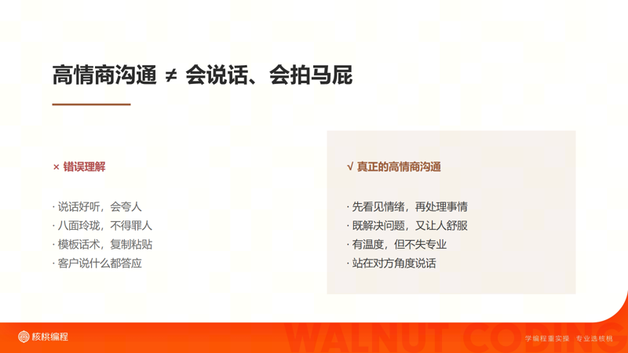
进入第二部分，先纠正一个常见误解：高情商沟通，不等于会说话、会拍马屁。左边是错误理解：说话好听、会夸人；八面玲珑、不得罪人；模板话术，复制粘贴；客户说什么都答应。这些都不是高情商。真正的高情商沟通是右边这样：先看见情绪，再处理事情；既解决问题，又让人舒服；有温度，但不失专业；站在对方角度说话。家长来找咱们的时候，背后基本都带着情绪，可能是焦虑，可能是担心，也可能是不满。咱们的回复要先把这个情绪接住，再去解决具体问题。而且高情商不是一味讨好，什么都答应反而不专业。真正的高情商是既专业又有分寸，知道什么该说、什么不该说。来看一道题，下列哪项属于“真正的高情商沟通”？
互动题
下列哪项属于“真正的高情商沟通”？
- A. 说话好听，会夸人
- B. 八面玲珑，不得罪人
- C. 既解决问题，又让人舒服
- D. 客户说什么都答应
选错后：重讲本页重触发
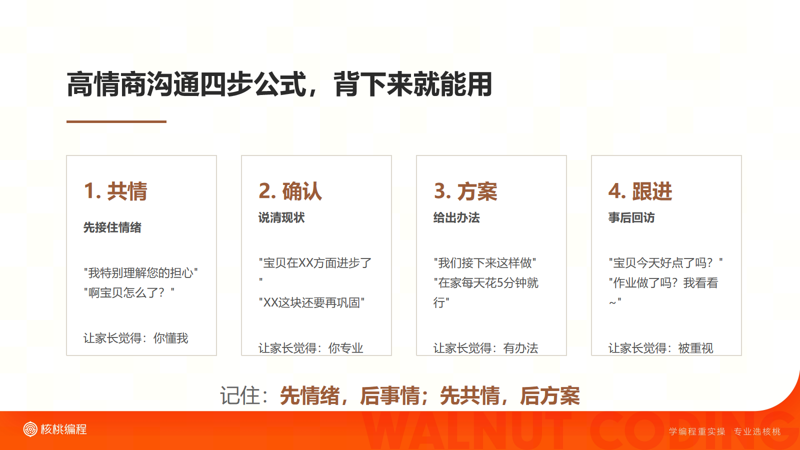
接下来这个公式，是今天最核心的东西，大家背下来就能用。高情商沟通四步：共情、确认、方案、跟进。第一步共情，先接住情绪。比如：“我特别理解您的担心。”“啊，宝贝怎么了？”目的是让家长觉得：你懂我。第二步确认，说清现状。比如：“宝贝在XX方面进步了。”“XX这块还要再巩固。”让家长觉得：你专业。第三步方案，给出办法。比如：“我们接下来这样做。”“在家每天花5分钟就行。”让家长觉得：有办法。第四步跟进，事后回访。比如：“宝贝今天好点了吗？”“作业做了吗？我看看。”让家长觉得：被重视。大家回想一下前面生病请假那个案例，先问宝贝怎么了，再说课我来安排，第二天再问好点没有，其实就用到了这个公式里的共情、方案和跟进。不管是请假、投诉、学情反馈还是挖需，都能套用。记住：先情绪，后事情；先共情，后方案。
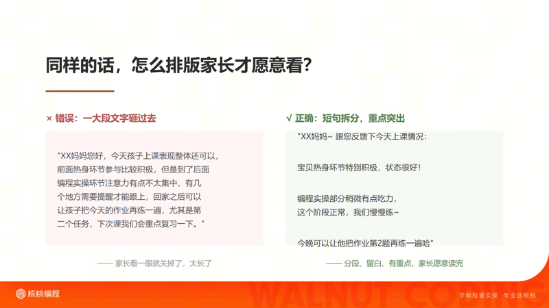
线上沟通全靠文字，所以排版这件事特别重要。同样的话，怎么排版家长才愿意看？咱们看对比。左边这种，一大段文字砸过去：“XX妈妈您好，今天孩子上课表现整体还可以，前面热身环节参与比较积极，但是到了后面编程实操环节注意力有点不太集中，有几个地方需要提醒才能跟上，回家之后可以让孩子把今天的作业再练一遍，尤其是第二个任务，下次课我们会重点复习一下。”家长在手机上一看，密密麻麻，扫一眼就关掉了，太长了。右边这个版本，短句拆分，重点突出：“XX妈妈，跟您反馈下今天上课情况。宝贝热身环节特别积极，状态很好！编程实操部分稍微有点吃力，这个阶段正常，我们慢慢练。今晚可以让他把作业第2题再练一遍哈。”分段、留白、有重点，家长愿意读完。记住三个排版原则：一句话不超过两行；说完一个意思就空一行；重点用语气词带一下就行，别堆一大堆表情符号。另外跟前面说的一样，别一次发一大段，拆成两三条发，更自然。
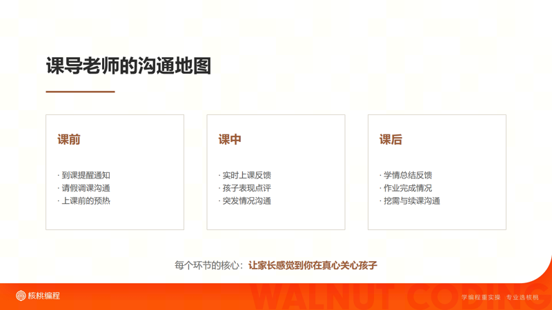
这一页是咱们课导老师的沟通地图，分成课前、课中、课后三个阶段。课前，主要是到课提醒通知、请假调课沟通、上课前的预热。课中，是实时上课反馈、孩子表现点评、突发情况沟通。课后，是学情总结反馈、作业完成情况、挖需与续课沟通。每个阶段的沟通重点不一样，但核心是同一个：让家长感觉到你在真心关心孩子，而不是在走流程。刚才学的四步公式和排版技巧，在每个环节都用得上。接下来，咱们就挑几个高频场景，一个一个拆。
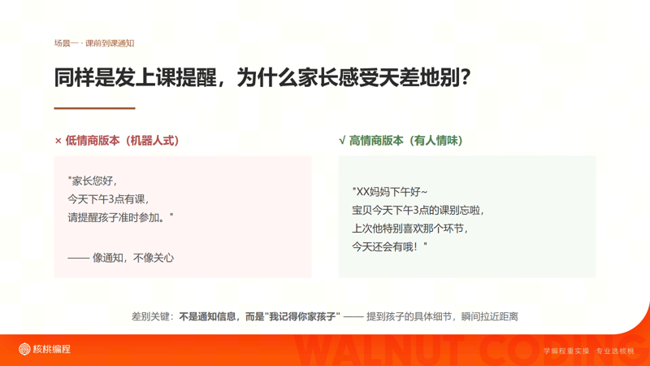
先看场景一，课前到课通知。同样是发上课提醒，为什么家长感受天差地别？左边低情商版本，机器人式：“家长您好，今天下午3点有课，请提醒孩子准时参加。”这就是一条通知，不像关心。右边高情商版本，有人情味：“XX妈妈下午好，宝贝今天下午3点的课别忘啦，上次他特别喜欢那个环节，今天还会有哦！”差别关键在哪？不在通知信息本身，时间一样，事情一样，差的是那一句我记得你家孩子。提到孩子的具体细节，距离一下子就拉近了。不需要多复杂，一句话就够。
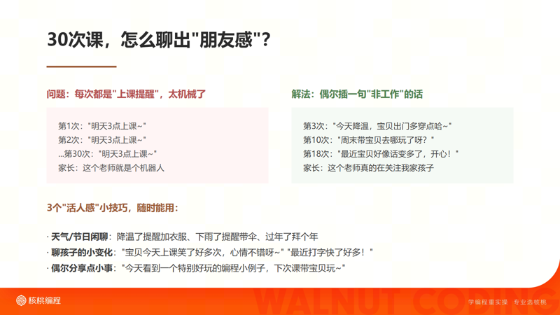
这一页讲一个最容易拉开差距的技巧，叫活人感。也就是30次课，怎么聊出朋友感。先看问题：一个孩子上30次课，如果每次你发的都是上课提醒，第一次明天3点上课，第二次还是明天3点上课，一直到第30次都一样，家长心里就一句话：这个老师就是个机器人。解法很简单：偶尔插一句非工作的话。比如第3次：“今天降温，宝贝出门多穿点哈。”第10次：“周末带宝贝去哪玩了呀？”第18次：“最近宝贝好像话变多了，开心！”家长就会觉得：这个老师是真的在关注我家孩子。三个随时能用的活人感小技巧。一是天气节日闲聊，降温了提醒加衣服，下雨了提醒带伞，过年了拜个年。二是聊孩子的小变化，比如宝贝今天上课笑了好多次，心情不错呀；最近打字快了好多。三是偶尔分享点小事，比如今天看到一个特别好玩的编程小例子，下次课带宝贝玩。所以活人感，不是回得越快越好，也不是多用网络热梗，而是偶尔一句自然的闲聊，让家长感受到你真的在关注孩子。不用多，隔几次课来一句就够，关键是自然，别太刻意。咱们给家长的，不只是一节节课，更是有人在真心陪着我家孩子长大的那种感觉。
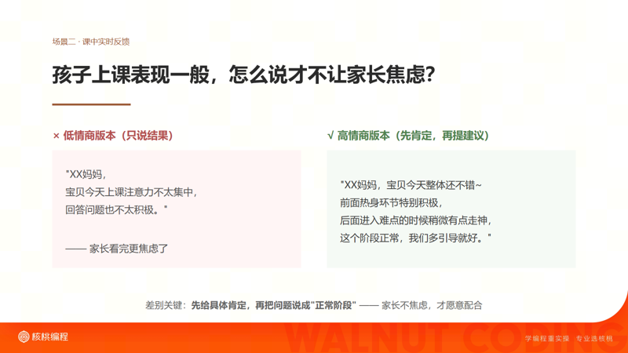
场景二，课中实时反馈。孩子上课表现一般，怎么说才不让家长焦虑？左边低情商版本，只说结果：“XX妈妈，宝贝今天上课注意力不太集中，回答问题也不太积极。”家长看完更焦虑了，孩子回家说不定还要挨一顿说。右边高情商版本，先肯定，再提建议：“XX妈妈，宝贝今天整体还不错，前面热身环节特别积极，后面进入难点的时候稍微有点走神，这个阶段正常，我们多引导就好。”差别的关键：先给一个具体的肯定，再把问题说成正常阶段，并且告诉家长我们会引导。注意，这不是只报喜不报忧，问题照样说了，只是换了一种家长能接住的说法。家长不焦虑，才愿意配合咱们。记住：反馈不是告状，是和家长站在一边。
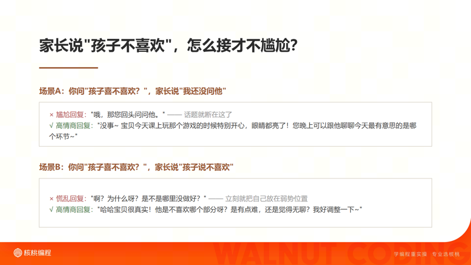
再看挖需。挖需的时候，你问孩子喜不喜欢，家长的回应常常让话题卡住。这里分两种情况，接法不一样。情况一：你问孩子喜不喜欢，家长说我还没问他。尴尬的回复是：“哦，那您回头问问他。”话题一下就断在这儿了。高情商的接法是：“没事，宝贝今天课上玩那个游戏的时候特别开心，眼睛都亮了！您晚上可以跟他聊聊，今天最有意思的是哪个环节。”你主动给家长一个话题引子，话就接上了。情况二：你问完，家长直接说孩子说不喜欢。慌乱的回复是：“啊？为什么呀？是不是哪里没做好？”这一下就把自己放到了弱势位置。高情商的接法是：“哈哈宝贝很真实！他是不喜欢哪个部分呀？是有点难，还是觉得无聊？我好调整一下。”别慌，也别急着道歉。孩子说不喜欢，可能是因为难，因为累，也可能只是那天心情不好。咱们要做的是问清楚不喜欢什么，再表达愿意调整，这样既专业又开放。大家发现没有，第一种接法里，起作用的正是孩子课上的具体表现。来看一道题，你问家长“孩子喜不喜欢”，家长说“孩子说不喜欢”，高情商的接法是？
互动题
你问家长“孩子喜不喜欢”，家长说“孩子说不喜欢”，高情商的接法是？
- A. “啊？为什么呀？是不是哪里没做好？”
- B. “哈哈宝贝很真实！他是不喜欢哪个部分呀？是有点难，还是觉得无聊？我好调整一下~”
- C. “哦，那您回头问问他。”
- D. “好的，收到。”
选错后：直接继续
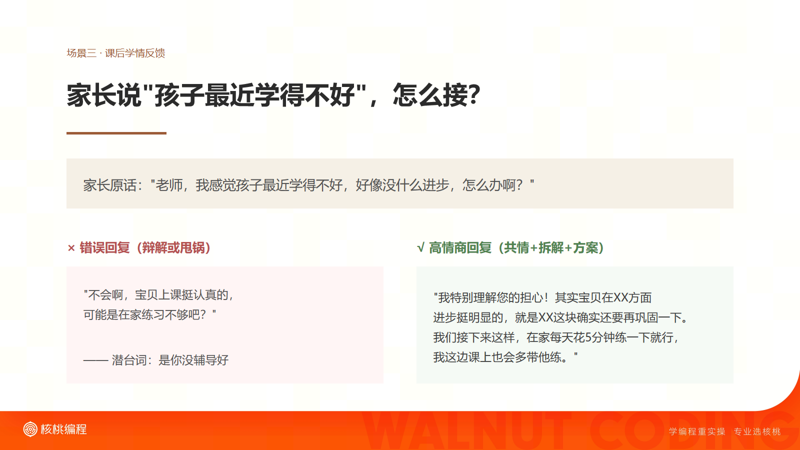
场景三，课后学情反馈。家长说孩子最近学得不好，怎么接？家长原话是：“老师，我感觉孩子最近学得不好，好像没什么进步，怎么办啊？”左边是错误回复，辩解或者甩锅：“不会啊，宝贝上课挺认真的，可能是在家练习不够吧？”这句话的潜台词是什么？是你没辅导好。家长听了肯定不舒服。右边是高情商回复，共情加拆解加方案：“我特别理解您的担心！其实宝贝在XX方面进步挺明显的，就是XX这块确实还要再巩固一下。我们接下来这样，在家每天花5分钟练一下就行，我这边课上也会多带他练。”家长说学得不好的时候，其实不是来问责的，是在焦虑，是来求助的。这时候千万别辩解，更别把锅甩给家长。先共情，再客观拆解现状，哪里进步了、哪里要巩固，最后给具体方案，这就是刚才四步公式的前三步。家长会觉得你专业，而且跟自己站在一边。
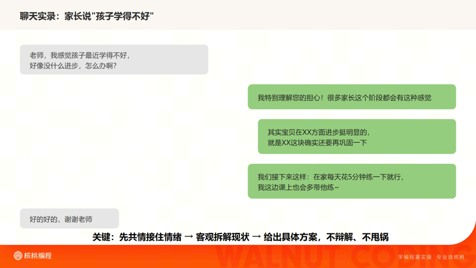
咱们再看一组聊天实录，把这个场景完整走一遍。家长先开口：“老师，我感觉孩子最近学得不好，好像没什么进步，怎么办啊？”老师第一条：“我特别理解您的担心！很多家长这个阶段都会有这种感觉。”先接住情绪。第二条：“其实宝贝在XX方面进步挺明显的，就是XX这块确实还要再巩固一下。”客观拆解现状，不全盘否定，也不只挑好听的说。第三条：“我们接下来这样，在家每天花5分钟练一下就行，我这边课上也会多带他练。”给出具体方案。家长回：“好的好的，谢谢老师。”关键路径就是：先共情接住情绪，再客观拆解现状，再给出具体方案，不辩解，不甩锅。聊完了也别忘了第四步，过几天问一句练得怎么样。大家还注意到没有，老师依然是分三条发的，家长读着不累，也像真人在慢慢说。
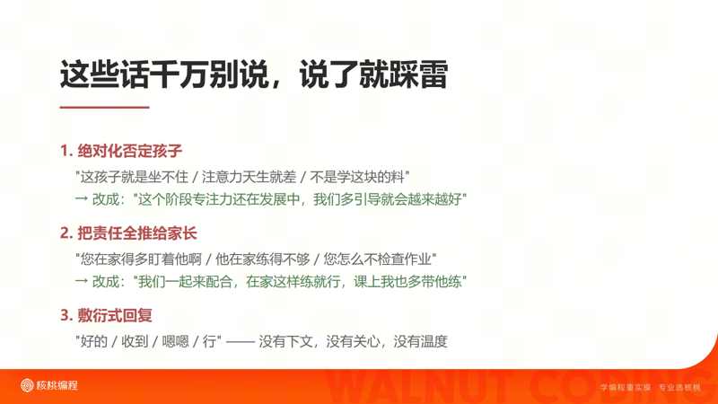
除了知道该说什么，还得知道哪些话千万别说，说了就踩雷。第一，绝对化否定孩子。比如这孩子就是坐不住，注意力天生就差，不是学这块的料。这种话一说，家长可能真就放弃了。孩子还在成长，很多问题都是阶段性的。可以改成：“这个阶段专注力还在发展中，我们多引导就会越来越好。”第二，把责任全推给家长。比如您在家得多盯着他啊，他在家练得不够，您怎么不检查作业。家长把孩子交给咱们，是信任咱们，不是来挨训的。可以改成：“我们一起来配合，在家这样练就行，课上我也多带他练。”第三，敷衍式回复。好的，收到，嗯嗯，行，没有下文，没有关心，没有温度。哪怕只是回复一条请假消息，也要多问一句孩子怎么样了。大家可以对照一下自己平时发的消息，这三类话有没有不小心说过。
好啦，今天的课就到这里。最后再收一句：先情绪，后事情；先共情，后方案；把人放在前面，课放在后面。大家扫码填写一下培训调研问卷，说说你的真实感受吧！
题库（阶段小测 + 综合测试）
T-S01 · 阶段练习题·单选 · 高情商沟通·阶段1 · 答案 C
家长在日常沟通中最在意的是？
- A. 今天学了哪些知识点
- B. 作业写得对不对
- C. 孩子有没有被老师真正看见、放在心上
- D. 成绩进步了多少
T-S02 · 阶段练习题·单选 · 高情商沟通·阶段1 · 答案 A
关于线上课导和家长沟通的特殊之处是？
- A. 和家长不见面，全靠文字
- B. 可以靠表情、语气补充说明
- C. 家长主要通过上课视频判断我们
- D. 沟通次数多，单次沟通影响不大
T-S03 · 阶段练习题·单选 · 高情商沟通·阶段1 · 答案 B
家长说孩子今晚晚归、可能赶不上课，老师第一步应该做什么？
- A. 马上劝孩子尽量来上课
- B. 先问清楚大概几点能到家，把情况了解清楚
- C. 直接安排明天补课
- D. 先提醒后面一定要准时
T-S04 · 阶段练习题·单选 · 高情商沟通·阶段1 · 答案 B
家长说孩子生病请假，生病期间老师最合适的做法是？
- A. 照常发小灶课和补课提醒
- B. 暂停一切课程通知，先关心孩子
- C. 多发作业让孩子在家补上
- D. 等家长主动联系再说
T-S05 · 阶段练习题·单选 · 高情商沟通·阶段1 · 答案 B
孩子生病请假，PPT总结的沟通关键是？
- A. 回一句“好的”就结束
- B. 先关心孩子 + 主动承担安排 + 隔天跟进问候
- C. 先发补课时间，再提醒下次准时上课
- D. 照常发小灶课通知，并附一句关心
T-S06 · 阶段练习题·单选 · 高情商沟通·阶段2 · 答案 A
同样发上课提醒，高情商版本和低情商版本的差别关键是？
- A. 不是通知信息，而是“我记得你家孩子”，提到孩子的具体细节
- B. 写清准确的上课时间
- C. 用“家长您好”正式开头
- D. 消息写得越长越显得重视
T-S07 · 阶段练习题·单选 · 高情商沟通·阶段2 · 答案 B
同样的话，怎么排版家长才愿意看？
- A. 一大段文字一次说全
- B. 短句拆分，分段、留白、有重点
- C. 多用完整的书面长句
- D. 把所有信息压缩成一句话
T-S08 · 阶段练习题·单选 · 高情商沟通·阶段2 · 答案 B
课中反馈孩子表现一般时，比较合适的说法是？
- A. 直接说孩子注意力不集中、回答不积极
- B. 先给具体肯定，再把问题说成正常阶段并表明会引导
- C. 只夸优点，回避存在的问题
- D. 把问题归为孩子天生坐不住
T-S09 · 阶段练习题·单选 · 高情商沟通·阶段2 · 答案 C
家长说“感觉孩子最近学得不好、没什么进步”，老师应避免的回复是？
- A. 先共情家长的担心
- B. 客观拆解哪里有进步、哪里还要巩固
- C. 辩解说孩子挺认真，可能是在家练习不够
- D. 给出在家配合的具体小方案
T-S10 · 阶段练习题·单选 · 高情商沟通·阶段2 · 答案 C
关于高情商沟通，下列理解正确的是？
- A. 就是说话好听、会夸人、八面玲珑
- B. 模板话术复制粘贴，客户说什么都答应
- C. 先看见情绪再处理事情，有温度也不失专业
- D. 尽量不得罪任何人，回避所有问题
T-F01 · 本章综合测试题·单选 · 高情商沟通·全章 · 答案 B
“活人感”主要指？
- A. 消息回复速度一定要快
- B. 偶尔插一句非工作的自然闲聊，体现真实关注
- C. 多使用网络热梗拉近距离
- D. 每条消息都写得很长很详细
T-F02 · 本章综合测试题·单选 · 高情商沟通·全章 · 答案 ABC
根据“这些话千万别说”，下列属于踩雷说法的是？（多选，选3项）
- A. “这孩子就是坐不住”
- B. “您在家得多盯着他啊”
- C. 只回“好的 / 收到”，没有下文
- D. “这个阶段专注力还在发展中，我们多引导就会越来越好”
T-F03 · 本章综合测试题·单选 · 高情商沟通·全章 · 答案 B
家长在日常沟通中在意的内容是？
- A. 孩子成绩进步了多少
- B. “我孩子被这个老师放在心上了”
- C. 老师每天发的通知足够多
- D. 每节课学的知识点足够多
T-F04 · 本章综合测试题·单选 · 高情商沟通·全章 · 答案 A
孩子生病请假，正确沟通节奏的核心原则是？
- A. 先把“人”放在前面，“课”放在后面
- B. 先把补课安排好，再关心孩子
- C. 课程通知照常发，避免落下进度
- D. 等家长主动联系再跟进
T-F05 · 本章综合测试题·单选 · 高情商沟通·全章 · 答案 A
想让家长觉得你是“专门发给他的”，关于发消息方式正确的是？
- A. 拆开发，一句话一条消息，中间停几秒
- B. 一口气把所有话都说完
- C. 每句话都用完整书面语
- D. 发完马上追问家长看了没
T-F06 · 本章综合测试题·单选 · 高情商沟通·全章 · 答案 ABC
线上课导把和家长的沟通做好了，能得到什么？（多选，选3项）
- A. 家长愿意回复你的消息
- B. 续课的时候不犹豫
- C. 出问题的时候家长先找你商量
- D. 可以减少和家长的沟通次数
T-F07 · 本章综合测试题·单选 · 高情商沟通·全章 · 答案 A
高情商沟通四步公式的正确顺序是？
- A. 共情→确认→方案→跟进
- B. 确认→共情→方案→跟进
- C. 方案→共情→确认→跟进
- D. 共情→方案→确认→跟进
T-F08 · 本章综合测试题·判断 · 高情商沟通·全章 · 答案 A
在课导老师的沟通地图中，下列属于“课中”环节的是？
- A. 实时上课反馈
- B. 到课提醒通知
- C. 学情总结反馈
- D. 作业完成情况
T-F09 · 本章综合测试题·单选 · 高情商沟通·全章 · 答案 B
你问家长“孩子喜不喜欢”，家长说“我还没问他”，高情商的接法是？
- A. “哦，那您回头问问他。”
- B. “没事~宝贝今天课上玩那个游戏的时候特别开心，眼睛都亮了！您晚上可以跟他聊聊今天最有意思的是哪个环节~”
- C. “啊？为什么呀？是不是哪里没做好？”
- D. “好的，收到。”
T-F10 · 本章综合测试题·单选 · 高情商沟通·全章 · 答案 A
家长说孩子晚归、可能赶不上课，问清后发现时间还行、能赶上后半段，PPT建议怎么回复？
- A. “那我看时间还来得及，等孩子到了我单独带他补一下前面的内容~”
- B. “那今天就先不赶了，我给孩子安排明天XX点补课，您看方便吗？”
- C. “今天的课很重要，还是尽量让孩子来上吧。”
- D. “那能不能让孩子先上线听一会儿？”